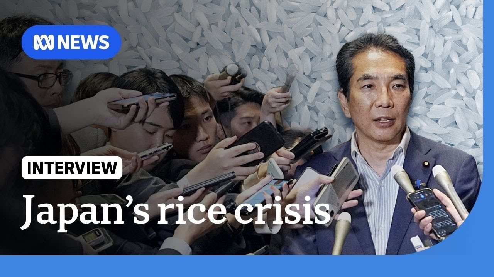

【一则关于大米的玩笑为何让日本内阁大臣丢了饭碗 | 世界 | ABC新闻】
Summary: The Japanese agriculture minister resigned after joking about not buying rice amid soaring prices, sparking public outrage during a cost-of-living crisis.
摘要： 日本农业大臣因在米价飞涨期间开玩笑称不用买米而辞职，在生活成本危机中引发众怒。

⏱️ Estimated Reading Time: 10 min
The Japanese minister has lost his job after making a joke about rice.
日本一位大臣因拿大米开玩笑而丢了工作。
It's no laughing matter in a country where prices have been skyrocketing amid a cost of living crisis.
在这个生活成本危机中物价飞涨的国家，这并非儿戏。
Japan's agriculture minister Takuito is out of a job after an illtimed joke about never having to buy rice went down the wrong way.
日本农业大臣泷户因不合时宜地开玩笑称从不需要买米而遭到反对并离职。
Personally, I would like to apologize again for making an inappropriate comment as the minister in charge.
作为负责大臣，我本人想再次为不当言论道歉。
While the Japanese people are struggling with rice prices, officials have blamed the situation on poor harvest due to hot weather and high fertilizer costs.
当日本民众苦于米价时，官员将问题归咎于高温天气和高化肥成本导致的歉收。
The government has even tapped into its emergency rice stockpile, but that's done little to ease the pressure.
政府甚至动用了应急大米储备，但收效甚微。
The rice price hike is really troublesome.
米价上涨确实令人头疼。
Rice is something we eat every day.
大米是我们每日的主食。
People can't do without rice.
人们离不开大米。
So, food price hikes are the biggest headache.
因此食品涨价最让人困扰。
I haven't been able to eat rice every day over the past month, just twice or three times a week.
过去一个月我无法每天吃米饭，每周只能吃两三次。
The saga could be bad news for Prime Minister Shagiru Ishaba, who is facing mounting criticism over the cost of living crisis in Japan.
这一事件对深陷日本生活成本危机批评的首相岸田文雄可能是坏消息。
With an upper house election in July looming, he was quick to reassure voters that he's doing everything he can.
随着7月参议院选举临近，他迅速向选民保证正竭尽全力。
As a successor for Takuito, I have appointed Shinjurro Cooisumi as the new agriculture minister.
作为泷户的继任者，我已任命神治郎小泉为新任农业大臣。
I instructed Mr. Cisumi to first tackle the prices of the rice so that consumers can provide rice at a stable price.
我指示小泉先生首先解决米价问题，让消费者能以稳定价格购买大米。
And to consider releasing the stock rice making the most of the non-competitive contracts.
并考虑释放储备米，充分利用非竞争性合同。
In April, Japan began importing rice from South Korea for the first time in a quarter of a century.
四月日本时隔25年首次从韩国进口大米。
And last week, the average price sold at supermarkets reached a record high.
上周超市大米均价创历史新高。
Rice has historically been a hot button issue in Japan.
大米历来是日本的敏感议题。
With riots over soaring prices, even toppling a government in 1918.
1918年就曾因米价暴涨引发骚乱推翻政府。
I will put rice before anything.
我将把大米问题置于首位。
I now consider myself a rice minister.
我现在自视为"大米大臣"。
Japan's political establishment vowing to rise to the occasion.
日本政界誓言应对这一局面。
Amelia Costigan, ABC News.
ABC新闻，阿米莉亚·科斯蒂根报道。
Let's get more on this with Dr. Jeff Hall.
请听杰夫·霍尔博士的进一步分析。
He's a special lecturer in Japanese studies at Kanda University of International Studies and he joins me now from Tokyo.
他是神田外语大学日本研究特聘讲师，现从东京加入节目。
Jeff, good to have you with us on the program once again.
杰夫，欢迎再次做客节目。
Now, that farm minister Takuetto, he was joking about not having to buy rice.
关于前农业大臣泷户开玩笑说不需买米一事——
Can you explain the outrage that ultimately forced him to resign?
能否解释最终迫使他辞职的民愤？
There was political outrage, was there public outrage?
是政治愤怒还是公众愤怒？
Sure.
当然。
I mean, I don't really think he was joking to be honest.
说实话我不认为他是在开玩笑。
It is quite common to receive free rice from people in Japan if you have friends who are farmers.
在日本若有务农朋友，收到免费大米很常见。
Uh but in the case of somebody being an influential politician, the person in charge of supposedly fixing this rice price uh problem uh to make a speech where you kind of brag about or as he would say joke about never having to pay for rice in his life or at least in recent years.
但作为本应解决米价问题的掌权政要，发表类似炫耀或所谓玩笑称终生或近年无需买米的言论——
Uh it's the worst possible thing to say at a time when rice is one of the main issues that uh most voters are feeling in their pocketbooks every single day.
在米价成为选民每日切肤之痛的时刻，这是最糟糕的发言。
Yeah.
确实。
So uh let's extrapolate this a little bit further.
那么进一步分析——
What's happening in the industry at the moment that that's leading to you know severe shortages of the staple?
当前行业发生了什么导致主食严重短缺？
It started last summer, I would say, when the government uh gave a warning that there might be a large earthquake soon, and this caused quite a bit of people to rush to the stores to buy rice.
我认为始于去年夏天政府预警可能发生大地震，引发抢购潮。
And it's not like there was a massive crop failure or anything in the last year.
去年并未出现严重歉收。
Uh rice production has been pretty good.
大米产量相当不错。
Uh but nonetheless, even though stock piles have been released, uh it continues to be high prices in the stores and people are very frustrated by this.
但尽管释放了储备，零售价仍居高不下，民众非常沮丧。
Uh the government's uh new plan, which is to uh change the bidding system for the release of stockpiles might have an impact.
政府改革储备米竞标制度的新计划可能产生影响。
Uh but it's too early to really see if it's actually going to go down to the price that the prime minister and Mr. Cisumi are saying it's going to go down to.
但现在判断能否如首相和小泉所言降价还为时过早。
Yeah.
是的。
So, is this a consumer-driven um uh crisis, I suppose?
那么这是否算消费者驱动的危机？
And to that point as well, you know, is does Japan have enough at the moment?
另外日本当前储备是否充足？
Well, it's partly consumer-driven.
部分是消费者驱动。
Part of it is also that in the post-war era, uh over time, Japanese have consumed less rice and farmers have shrunk in numbers.
部分原因还在于战后日本人米消费量递减，农民数量减少。
And for a time, the government discouraged farmers from growing too much rice.
政府曾一度限制稻米种植。
And then when we get a spike in demand for rice, there wasn't an ability to keep up with it and keep prices stable.
当需求激增时，已无法维持价格稳定。
But there's also the added problem for farmers themselves.
但农民自身也面临问题。
Right now, the price is good for them.
目前价格对他们有利。
Uh but if it goes back down to the price that it was last year, uh they're not going to be very happy growing much rice uh after all.
若回落至去年水平，他们就不愿多种植了。
So the the previous agriculture minister who just stepped down, he didn't want prices to go down too much.
因此刚辞职的前农业大臣不希望米价大跌。
Uh but the prime minister I think wants them to go to as close as last year as he can get them because this election is coming up in the summer.
而首相希望尽可能接近去年水平，因夏季选举在即。
Yes.
确实。
And given it's such a stable day and and the fact that Japan is also now having to import from other countries.
鉴于大米是日常主食且日本不得不进口——
Um is this being viewed as some sort of like a a national embarrassment for the prime minister?
这是否被视为首相的国耻？
It's a crisis for his government because he hasn't really delivered any big wins since he became the prime minister.
这对其政府是危机，因他就任后未有重大政绩。
He he inherited a a scandal laden party.
他接手了丑闻缠身的政党。
Uh he lost seats in the last election and is now in a minority government.
上次选举失利后现为少数政府。
Uh and he hasn't made progress on trade talks with America.
对美贸易谈判也停滞不前。
Uh and so all of these things combined together with the the main food item that everybody notices the price of at supermarkets being so high.
这些因素叠加主食价格高涨——
uh if he can't somehow get this down maybe 20 25% maybe something more than that before this summer's election uh it's going to be a serious problem for him especially now that he has committed to changing the agriculture minister which is supposed to lead to new reforms to this plan.
若无法在选举前降价20-25%或更多，尤其换帅承诺改革后，将成严重问题。
So, uh, if he had kept the agriculture minister in place, maybe he he could have blamed that guy for it.
若保留原大臣或可归咎于人。
But now he's made a critical decision.
但现做出关键决定。
He's he's being decisive and he has to deliver decisive results.
展现决断力后必须交出成果。
Yes.
是的。
And national elections are coming up there, Jeff.
国民选举临近——
So, you know, how do you think the prime minister prime minister is going to uh campaign?
你认为首相将如何竞选？
I mean will uh the ongoing uh cost of living issues be the front and center on the minds of voters?
生活成本问题会成为选民关注焦点吗？
The this will be the front and center issue.
这将是核心议题。
I think uh the opposition parties are running on various platforms that are uh saying that taxes should be reduced.
在野党打出减税等不同政纲。
Uh and uh fiscally speaking this is not a very wise idea for the Japanese government which has so much debt.
对高负债的日本政府这财政上并不明智。
Uh so Mr. Ishiba is hoping that he can maybe reduce rice prices that'll give something where he doesn't have to promise cutting taxes.
因此岸田希望借降低米价避免承诺减税。
But if he gets no rice price reduction, these opposition parties are going to cut into him in the summer election as they promise tax uh relief as a way of making people uh not suffer so much economically.
但若米价未降，在野党将在夏季选举中以减税承诺打击他。
Yeah, we'll see what happens as the election near.
且看选情发展。
Jeff Hall, thank you so much once again.
再次感谢杰夫·霍尔。
Thanks for having me.
谢谢邀请。